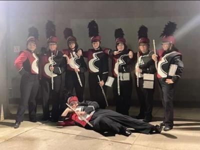

You walk into the tech storage room and immediately feel at ease as you have finally found your section
Despite being late you are given a warm welcome by your fellow flute players
The section leader gets you set up with your music and has everyone introduce themselves
They go back to what they were doing before, that is practicing the pep tunes and show songs, you join in, comforted knowing that your misadventure has ended, and now your marching band experience has just begun
While your adventure seems to have ended there are still other endings to find, even a secret ending if you are observant enough and persistant enough to find it